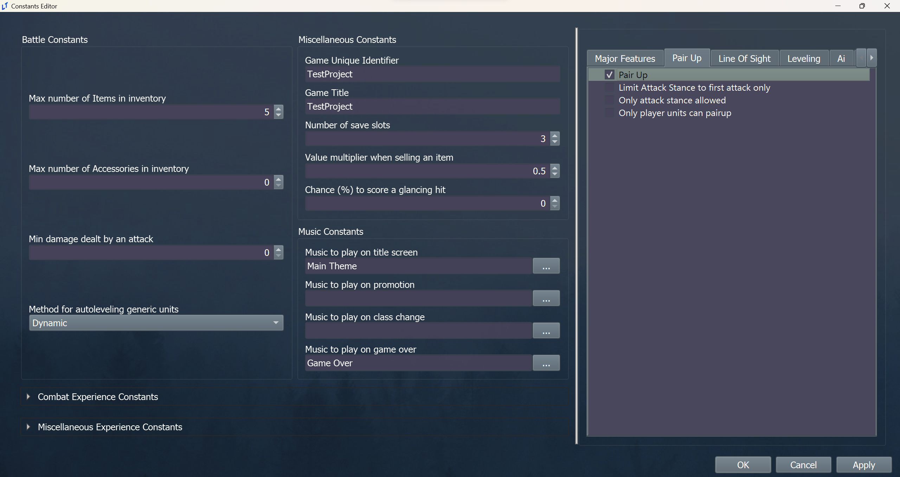
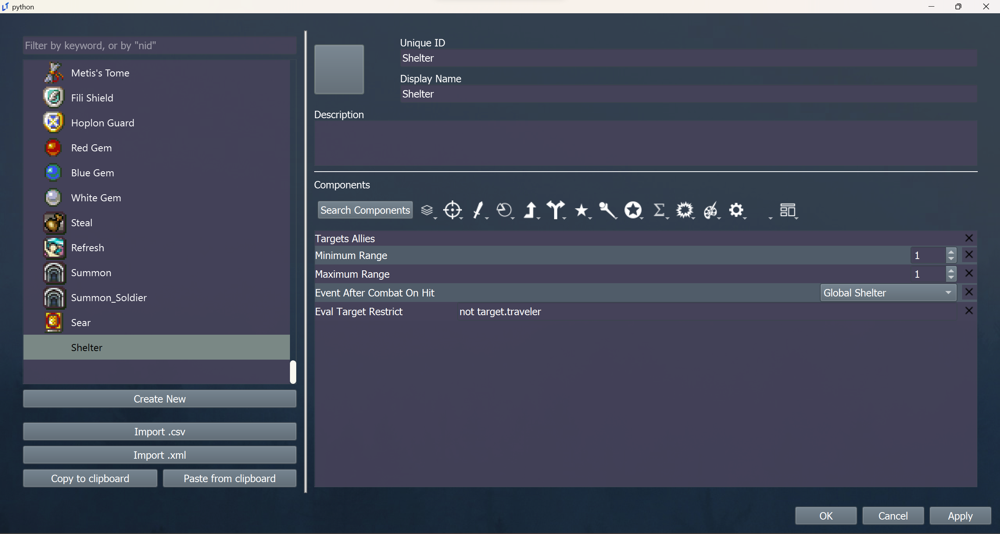
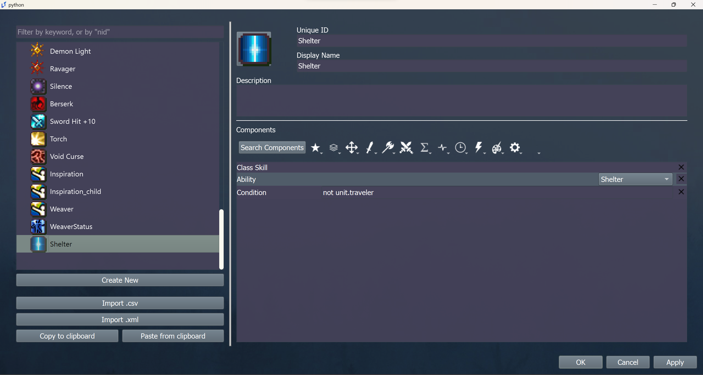

Shelter Skill
Description
I want a skill that:
Grants an ability called Shelter.
When the ability is used, an adjacent target becomes the user’s pair up partner
Tutorial
Step 1: Turn on pair up
Open the constants editor and enable the pair up constant.

Step 2: Create an event that does the pairing
Open the event editor and navigate to global events. In a new event, enter the following code.
move_unit;{unit2};{unit};normal;stack;no_follow
pair_up;{unit2};{unit}
Do not set an event trigger. Name the event something like “Shelter”.
Step 3: Create a shelter item
Open the item editor and create a shelter item.

While you can make the minimum and maximum range whatever you want, this configuration will ensure a system that works like Fates Shelter..
Step 4: Create a shelter skill
Open the skill editor and create a shelter skill.

Add a description and skill icon that you like.
Conclusion
You’re done! Test the skill in a debug map to try it out.